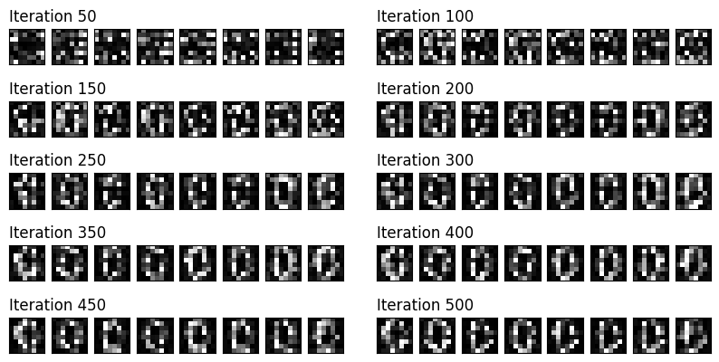

import math
import random
import numpy as np
import pandas as pd
import matplotlib.pyplot as plt
import matplotlib.gridspec as gridspec
import pennylane as qml
# Pytorch imports
import torch
import torch.nn as nn
import torch.optim as optim
import torchvision
import torchvision.transforms as transforms
from torch.utils.data import Dataset, DataLoader
# Set the random seed for reproducibility
seed = 42
torch.manual_seed(seed)
np.random.seed(seed)
random.seed(seed)Quantum Generative Adversarial Networks
Based on A Basic Introduction to Quantum GAN’s - Javier Marin (Maedium Article)
https://pennylane.ai/qml/demos/tutorial_quantum_gans
Quantum computing , just becomes vastly simpler once you take the physics out of it.
Quantum circuit that are like recipes or instruction manuals for quantum computer.
Tabular Quantum GAN - on quantum circuit
Obrazy
class DigitsDataset(Dataset):
"""Pytorch dataloader for the Optical Recognition of Handwritten Digits Data Set"""
def __init__(self, csv_file, label=0, transform=None):
"""
Args:
csv_file (string): Path to the csv file with annotations.
root_dir (string): Directory with all the images.
transform (callable, optional): Optional transform to be applied
on a sample.
"""
self.csv_file = csv_file
self.transform = transform
self.df = self.filter_by_label(label)
def filter_by_label(self, label):
# Use pandas to return a dataframe of only zeros
df = pd.read_csv(self.csv_file)
df = df.loc[df.iloc[:, -1] == label]
return df
def __len__(self):
return len(self.df)
def __getitem__(self, idx):
if torch.is_tensor(idx):
idx = idx.tolist()
image = self.df.iloc[idx, :-1] / 16
image = np.array(image)
image = image.astype(np.float32).reshape(8, 8)
if self.transform:
image = self.transform(image)
# Return image and label
return image, 0image_size = 8 # Height / width of the square images
batch_size = 1
transform = transforms.Compose([transforms.ToTensor()])
dataset = DigitsDataset(csv_file="optdigits.tra", transform=transform)
dataloader = torch.utils.data.DataLoader(
dataset, batch_size=batch_size, shuffle=True, drop_last=True
)plt.figure(figsize=(8,2))
for i in range(8):
image = dataset[i][0].reshape(image_size,image_size)
plt.subplot(1,8,i+1)
plt.axis('off')
plt.imshow(image.numpy(), cmap='gray')
plt.show()class Discriminator(nn.Module):
"""Fully connected classical discriminator"""
def __init__(self):
super().__init__()
self.model = nn.Sequential(
# Inputs to first hidden layer (num_input_features -> 64)
nn.Linear(image_size * image_size, 64),
nn.ReLU(),
# First hidden layer (64 -> 16)
nn.Linear(64, 16),
nn.ReLU(),
# Second hidden layer (16 -> output)
nn.Linear(16, 1),
nn.Sigmoid(),
)
def forward(self, x):
return self.model(x)# Quantum variables
n_qubits = 5 # Total number of qubits / N
n_a_qubits = 1 # Number of ancillary qubits / N_A
q_depth = 6 # Depth of the parameterised quantum circuit / D
n_generators = 4 # Number of subgenerators for the patch method / N_G# Quantum simulator
dev = qml.device("default.qubit", wires=n_qubits)
# Enable CUDA device if available
#device = torch.device("mps" if torch.mps.is_available() else "cpu")
device = "cpu"device'cpu'@qml.qnode(dev, diff_method="parameter-shift")
def quantum_circuit(noise, weights):
weights = weights.reshape(q_depth, n_qubits)
# Initialise latent vectors
for i in range(n_qubits):
qml.RY(noise[i], wires=i)
# Repeated layer
for i in range(q_depth):
# Parameterised layer
for y in range(n_qubits):
qml.RY(weights[i][y], wires=y)
# Control Z gates
for y in range(n_qubits - 1):
qml.CZ(wires=[y, y + 1])
return qml.probs(wires=list(range(n_qubits)))def partial_measure(noise, weights):
# Non-linear Transform
probs = quantum_circuit(noise, weights)
probsgiven0 = probs[: (2 ** (n_qubits - n_a_qubits))]
probsgiven0 /= torch.sum(probs)
# Post-Processing
probsgiven = probsgiven0 / torch.max(probsgiven0)
return probsgivenclass PatchQuantumGenerator(nn.Module):
"""Quantum generator class for the patch method"""
def __init__(self, n_generators, q_delta=1):
"""
Args:
n_generators (int): Number of sub-generators to be used in the patch method.
q_delta (float, optional): Spread of the random distribution for parameter initialisation.
"""
super().__init__()
self.q_params = nn.ParameterList(
[
nn.Parameter(q_delta * torch.rand(q_depth * n_qubits), requires_grad=True)
for _ in range(n_generators)
]
)
self.n_generators = n_generators
def forward(self, x):
# Size of each sub-generator output
patch_size = 2 ** (n_qubits - n_a_qubits)
# Create a Tensor to 'catch' a batch of images from the for loop. x.size(0) is the batch size.
images = torch.Tensor(x.size(0), 0).to(device)
# Iterate over all sub-generators
for params in self.q_params:
# Create a Tensor to 'catch' a batch of the patches from a single sub-generator
patches = torch.Tensor(0, patch_size).to(device)
for elem in x:
q_out = partial_measure(elem, params).float().unsqueeze(0)
patches = torch.cat((patches, q_out))
# Each batch of patches is concatenated with each other to create a batch of images
images = torch.cat((images, patches), 1)
return imageslrG = 0.3 # Learning rate for the generator
lrD = 0.01 # Learning rate for the discriminator
num_iter = 500 # Number of training iterationsdiscriminator = Discriminator().to(device)
generator = PatchQuantumGenerator(n_generators).to(device)
# Binary cross entropy
criterion = nn.BCELoss()
# Optimisers
optD = optim.SGD(discriminator.parameters(), lr=lrD)
optG = optim.SGD(generator.parameters(), lr=lrG)
real_labels = torch.full((batch_size,), 1.0, dtype=torch.float, device=device)
fake_labels = torch.full((batch_size,), 0.0, dtype=torch.float, device=device)
# Fixed noise allows us to visually track the generated images throughout training
fixed_noise = torch.rand(8, n_qubits, device=device) * math.pi / 2
# Iteration counter
counter = 0
# Collect images for plotting later
results = []
while True:
for i, (data, _) in enumerate(dataloader):
# Data for training the discriminator
data = data.reshape(-1, image_size * image_size)
real_data = data.to(device)
# Noise follwing a uniform distribution in range [0,pi/2)
noise = torch.rand(batch_size, n_qubits, device=device) * math.pi / 2
fake_data = generator(noise)
# Training the discriminator
discriminator.zero_grad()
outD_real = discriminator(real_data).view(-1)
outD_fake = discriminator(fake_data.detach()).view(-1)
errD_real = criterion(outD_real, real_labels)
errD_fake = criterion(outD_fake, fake_labels)
# Propagate gradients
errD_real.backward()
errD_fake.backward()
errD = errD_real + errD_fake
optD.step()
# Training the generator
generator.zero_grad()
outD_fake = discriminator(fake_data).view(-1)
errG = criterion(outD_fake, real_labels)
errG.backward()
optG.step()
counter += 1
# Show loss values
if counter % 10 == 0:
print(f'Iteration: {counter}, Discriminator Loss: {errD:0.3f}, Generator Loss: {errG:0.3f}')
test_images = generator(fixed_noise).view(8,1,image_size,image_size).cpu().detach()
# Save images every 50 iterations
if counter % 50 == 0:
results.append(test_images)
if counter == num_iter:
break
if counter == num_iter:
breakIteration: 10, Discriminator Loss: 1.329, Generator Loss: 0.811
Iteration: 20, Discriminator Loss: 1.331, Generator Loss: 0.809
Iteration: 30, Discriminator Loss: 1.296, Generator Loss: 0.814
Iteration: 40, Discriminator Loss: 1.276, Generator Loss: 0.789
Iteration: 50, Discriminator Loss: 1.248, Generator Loss: 0.806
Iteration: 60, Discriminator Loss: 1.270, Generator Loss: 0.754
Iteration: 70, Discriminator Loss: 1.239, Generator Loss: 0.729
Iteration: 80, Discriminator Loss: 1.306, Generator Loss: 0.694
Iteration: 90, Discriminator Loss: 1.271, Generator Loss: 0.712
Iteration: 100, Discriminator Loss: 1.316, Generator Loss: 0.641
Iteration: 110, Discriminator Loss: 1.224, Generator Loss: 0.654
Iteration: 120, Discriminator Loss: 1.271, Generator Loss: 0.680
Iteration: 130, Discriminator Loss: 1.229, Generator Loss: 0.678
Iteration: 140, Discriminator Loss: 1.235, Generator Loss: 0.692
Iteration: 150, Discriminator Loss: 1.176, Generator Loss: 0.702
Iteration: 160, Discriminator Loss: 1.299, Generator Loss: 0.659
Iteration: 170, Discriminator Loss: 1.241, Generator Loss: 0.663
Iteration: 180, Discriminator Loss: 1.211, Generator Loss: 0.671
Iteration: 190, Discriminator Loss: 1.301, Generator Loss: 0.708
Iteration: 200, Discriminator Loss: 1.275, Generator Loss: 0.606
Iteration: 210, Discriminator Loss: 1.237, Generator Loss: 0.644
Iteration: 220, Discriminator Loss: 1.216, Generator Loss: 0.764
Iteration: 230, Discriminator Loss: 1.182, Generator Loss: 0.697
Iteration: 240, Discriminator Loss: 1.344, Generator Loss: 0.610
Iteration: 250, Discriminator Loss: 1.158, Generator Loss: 0.721
Iteration: 260, Discriminator Loss: 1.320, Generator Loss: 0.669
Iteration: 270, Discriminator Loss: 1.276, Generator Loss: 0.662
Iteration: 280, Discriminator Loss: 1.324, Generator Loss: 0.643
Iteration: 290, Discriminator Loss: 1.334, Generator Loss: 0.642
Iteration: 300, Discriminator Loss: 1.153, Generator Loss: 0.718
Iteration: 310, Discriminator Loss: 1.175, Generator Loss: 0.706
Iteration: 320, Discriminator Loss: 1.337, Generator Loss: 0.639
Iteration: 330, Discriminator Loss: 1.227, Generator Loss: 0.757
Iteration: 340, Discriminator Loss: 1.059, Generator Loss: 0.797
Iteration: 350, Discriminator Loss: 1.050, Generator Loss: 0.807
Iteration: 360, Discriminator Loss: 1.078, Generator Loss: 0.782
Iteration: 370, Discriminator Loss: 1.268, Generator Loss: 0.658
Iteration: 380, Discriminator Loss: 1.248, Generator Loss: 0.632
Iteration: 390, Discriminator Loss: 1.080, Generator Loss: 0.871
Iteration: 400, Discriminator Loss: 1.216, Generator Loss: 0.636
Iteration: 410, Discriminator Loss: 1.019, Generator Loss: 0.818
Iteration: 420, Discriminator Loss: 1.238, Generator Loss: 0.595
Iteration: 430, Discriminator Loss: 1.219, Generator Loss: 0.695
Iteration: 440, Discriminator Loss: 1.156, Generator Loss: 0.877
Iteration: 450, Discriminator Loss: 0.870, Generator Loss: 0.926
Iteration: 460, Discriminator Loss: 1.082, Generator Loss: 0.795
Iteration: 470, Discriminator Loss: 0.966, Generator Loss: 0.745
Iteration: 480, Discriminator Loss: 1.078, Generator Loss: 0.814
Iteration: 490, Discriminator Loss: 0.992, Generator Loss: 0.790
Iteration: 500, Discriminator Loss: 1.291, Generator Loss: 0.703fig = plt.figure(figsize=(10, 5))
outer = gridspec.GridSpec(5, 2, wspace=0.1)
for i, images in enumerate(results):
inner = gridspec.GridSpecFromSubplotSpec(1, images.size(0),
subplot_spec=outer[i])
images = torch.squeeze(images, dim=1)
for j, im in enumerate(images):
ax = plt.Subplot(fig, inner[j])
ax.imshow(im.numpy(), cmap="gray")
ax.set_xticks([])
ax.set_yticks([])
if j==0:
ax.set_title(f'Iteration {50+i*50}', loc='left')
fig.add_subplot(ax)
plt.show()
dane tabelaryczne
import pennylane as qml
# Quantum variables
n_qubits = 5 # Total number of qubits / N
n_a_qubits = 1 # Number of ancillary qubits / N_A
q_depth = 6 # Depth of the parameterised quantum circuit / D
n_generators = 4 # Number of subgenerators for the patch method / N_G
dev = qml.device('default.qubit', wires=n_qubits)
@qml.qnode(dev, diff_method="parameter-shift")
def qc(noise, weight):
weights = weights.reshape(q_depth, n_qubits)
for i in range(n_qubits):
qml.RY(noise[i], wires=i)
for i in range(q_depth):
for y in range(n_qubits):
qml.RY(weights[i][y], wires=y)
for y in range(n_qubits-1):
qml.CZ(wires=[y,y+1])
return qml.probs(wires=list(range(n_qubits)))
def partial_measure(noise, weights):
# Non-linear Transform
probs = quantum_circuit(noise, weights)
probsgiven0 = probs[: (2 ** (n_qubits - n_a_qubits))]
probsgiven0 /= torch.sum(probs)
# Post-Processing
probsgiven = probsgiven0 / torch.max(probsgiven0)
return probsgivenclass PatchQGenerator(nn.Module):
"""Quantum generator class for the patch method"""
def __init__(self, n_generators, output_dim, q_delta=1):
super().__init__()
self.q_params = nn.ParameterList(
[
nn.Parameter(q_delta * torch.rand(q_depth * n_qubits), requires_grad=True)
for _ in range(n_generators)
]
)
self.n_generators = n_generators
self.output_dim = output_dim
def forward(self, x):
# Size of each sub-generator output
patch_size = 2 ** (n_qubits - n_a_qubits)
total_patches = (self.output_dim + patch_size -1) // patch_size
fake = torch.Tensor(x.size(0), 0).to(device)
# Iterate over all sub-generators
for params in self.q_params:
# Create a Tensor to 'catch' a batch of the patches from a single sub-generator
patches = torch.Tensor(0, patch_size).to(device)
for elem in x:
q_out = partial_measure(elem, params).float().unsqueeze(0)
patches = torch.cat((patches, q_out))
fake = torch.cat((fake, patches), 1)
fake = fake[:, :self.output_dim]
return fakeinput_dim = data.shape[1]
discriminator = Discriminator().to(device)
generator = PatchQGenerator(n_generators).to(device)
# Binary cross entropy
criterion = nn.BCELoss()
# Optimisers
optD = optim.Adam(discriminator.parameters(), lr=lrD)
optG = optim.Adam(generator.parameters(), lr=lrG)
real_labels = torch.full((batch_size,), 1.0, dtype=torch.float, device=device)
fake_labels = torch.full((batch_size,), 0.0, dtype=torch.float, device=device)
# Fixed noise allows us to visually track the generated images throughout training
fixed_noise = torch.rand(8, n_qubits, device=device) * math.pi / 2
# Iteration counter
counter = 0
# Collect images for plotting later
results = []
while True:
for i, (data, _) in enumerate(dataloader):
# Data for training the discriminator
real_data = data.to(device)
noise = torch.rand(batch_size, n_qubits, device=device) * math.pi / 2
fake_data = generator(noise)
# Training the discriminator
discriminator.zero_grad()
outD_real = discriminator(real_data).view(-1)
outD_fake = discriminator(fake_data.detach()).view(-1)
errD_real = criterion(outD_real, real_labels)
errD_fake = criterion(outD_fake, fake_labels)
# Propagate gradients
errD_real.backward()
errD_fake.backward()
errD = (errD_real + errD_fake)/2
optD.step()
# Training the generator
generator.zero_grad()
outD_fake = discriminator(fake_data).view(-1)
errG = criterion(outD_fake, real_labels)
errG.backward()
optG.step()
counter += 1
# Show loss values
if counter % 20 == 0:
print(f'Iteration: {counter}, Discriminator Loss: {errD:0.3f}, Generator Loss: {errG:0.3f}')
if counter == num_iter:
break
if counter == num_iter:
break